Computer-use agents need to reliably ground action targets in complex desktop scenes, where multiple applications, overlapping windows, and visually similar controls compete for attention. Existing training data rarely pair such scenes with dense annotations or vary them in a controlled way. We introduce DeskForge, a controllable desktop environment that composes and explores real applications to generate large-scale supervision for computer-use agents. It varies application states, content, window layout, appearance, and resolution, and fuses screenshots, accessibility trees, and window geometry into dense element annotations while recording the outcome of each executed action. Using this environment, we construct DeskForge-1M, a corpus of 1.2M annotated desktop observations containing 159.7M element instances. We fine-tune four vision-language models on 200K grounding examples drawn from DeskForge-1M. All four improve across held-out desktop conditions and on all five external GUI grounding benchmarks; for Qwen3.5-4B, accuracy increases by 11.51 percentage points on ScreenSpot-Pro and 10.11 points on OSWorld-G. The gains also translate to long-horizon task completion: under a fixed planner, the fine-tuned action models solve more WebArena-Infinity and OpenApps tasks, with Qwen3.5-4B increasing from 31 to 50 of 119 tasks and from 3 to 15 of 100 tasks, respectively. These results show that controllable composition of real desktop environments provides a scalable source of supervision for improving both GUI grounding and long-horizon computer use.
Long-horizon tasks, with and without DeskForge
In every episode the same planner (Qwen3.6-27B) writes each step's instruction; only the action model that grounds it on screen differs. Left: the base model. Right: the same model fine-tuned on DeskForge-1M.
The DeskForge Environment
DeskForge generates the desktop rather than recording it. Real applications run in isolated Linux sessions, composed into configurable multi-window scenes; every screen is captured with its interface structure and window layout, and every executed action with its outcome.
Controllable scene composition
A scene specification selects the applications and their initial states, stages their content, and sets window layout, appearance, and display resolution. The same application thus appears in many contexts, next to competing controls and partially overlapping windows.
Applications and states
Browsers, editors, file managers, and desktop utilities, launched with scripted initial states.
Content
Staged documents, projects, and data, so each interface shows different information from scene to scene.
Layout and stacking
Multi-window arrangements with similar labels, competing controls, and overlapping windows.
Appearance
Diverse themes, icon sets, and window decorations, from classic Linux to Windows- and macOS-inspired styles.
Resolution
Display sizes from laptop screens to 4K monitors.
Exploration
Clicks on actionable elements inside their visible regions, recording what each one changes.
Appearance presets
Community themes, icon sets, and window decorations are combined with configurable panels, docks, and backgrounds, so presets change how widgets and windows look, not only the wallpaper. All presets share the same Linux backend.
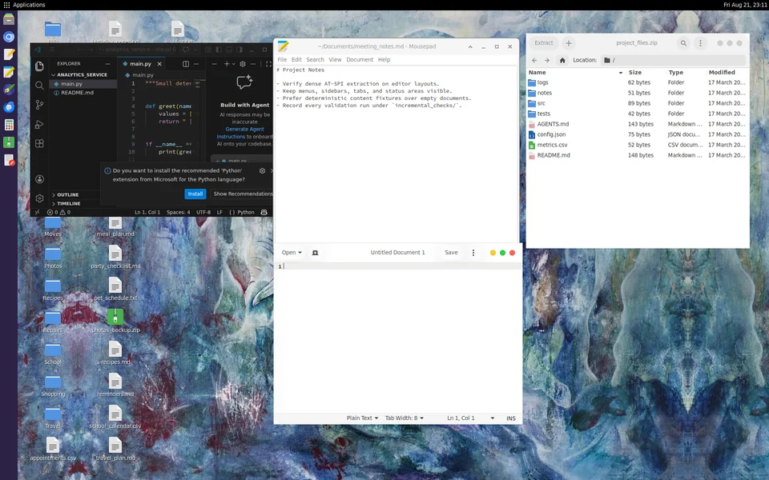
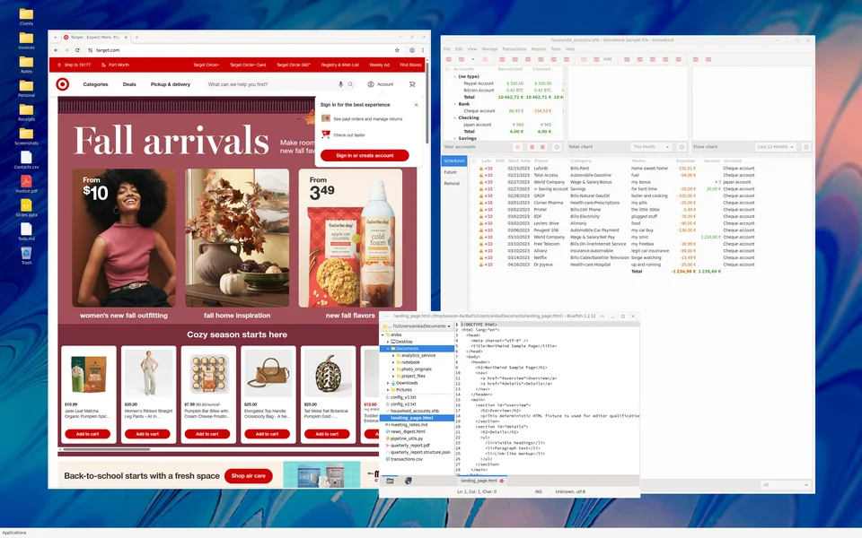
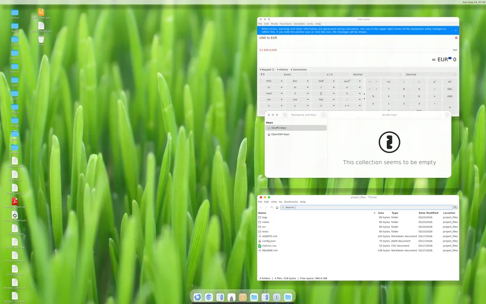
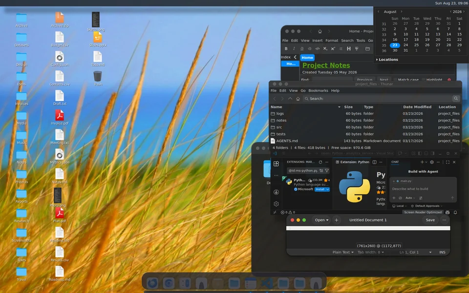
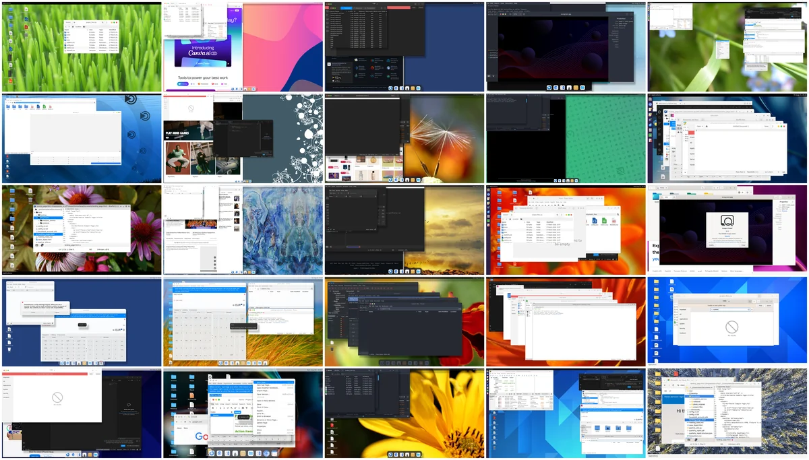
Dense structured annotations
The annotation pipeline reconciles accessibility trees, screenshots, and measured window geometry. Every visible element, not only the action target, gets its type, text, geometry, and interaction properties, together with its hierarchy, reading order, and owning application and window.
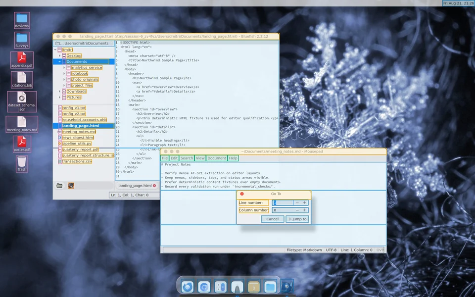
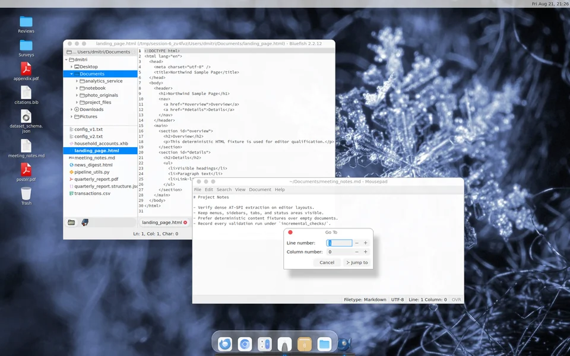
Visibility under occlusion
Accessibility trees alone do not say what is actually on screen. DeskForge clips each element against its containers, the viewport, overlapping windows, and transient overlays, and keeps a partly covered control's exposed region as a union of rectangles rather than its full box.
Displayed text is verified at the pixel level, separately from accessibility names. A human audit finds 99.8% of sampled element annotations correct.
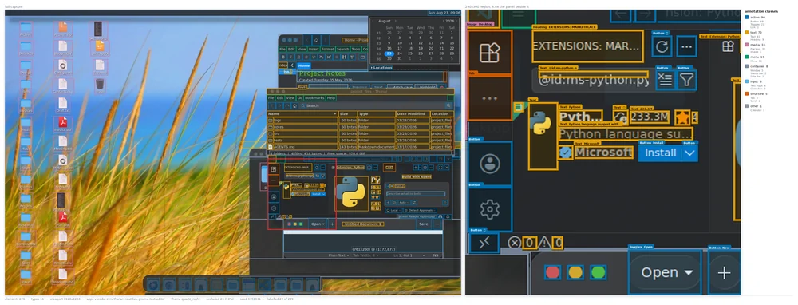
ScreenTag serialization
The visible annotations are serialized as ScreenTag, the compact markup introduced by ScreenParse. It preserves the element hierarchy, keeps exposed regions as visible fragments, and marks text hidden behind other windows.
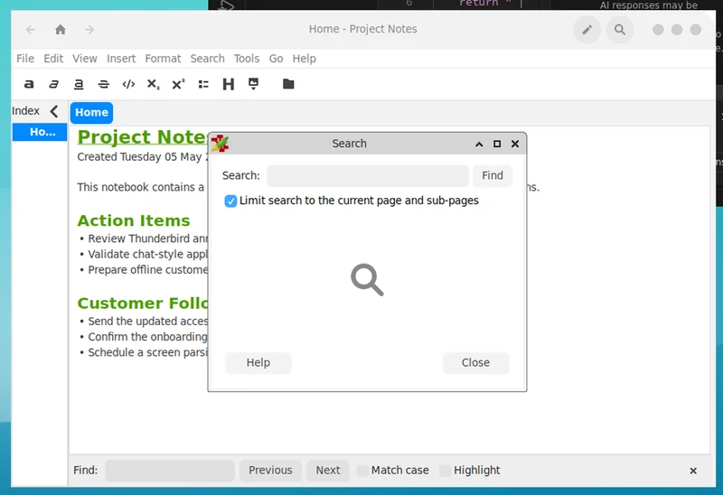
<screentag> <window><loc_209><loc_156><loc_444><loc_439> <title>Home - Project Notes</title> … <text_input><loc_228><loc_225><loc_442><loc_419> <fragment><loc_228><loc_225><loc_442><loc_228></fragment> <fragment><loc_228><loc_228><loc_275><loc_383></fragment> <fragment><loc_381><loc_228><loc_442><loc_383></fragment> <fragment><loc_228><loc_383><loc_442><loc_419></fragment> Project Note<occluded/> Created Tuesday 05 May <occluded/> This notebook contains a <occluded/>ns. Action Items • Review Thunderbird an<occluded/> • Validate chat-style appl<occluded/> … </text_input> … </window> <window><loc_275><loc_228><loc_381><loc_383> <title>Search</title> <text><loc_279><loc_248><loc_293><loc_261>Search:</text> <button><loc_363><loc_248><loc_376><loc_261>Find</button> … </window> </screentag>
Interaction recording and instructions
Each executed click links the screen before and after it, (St, at, St+1), with the target and what changed. A vision-language model turns each transition into a natural single-step instruction, which becomes grounding supervision.
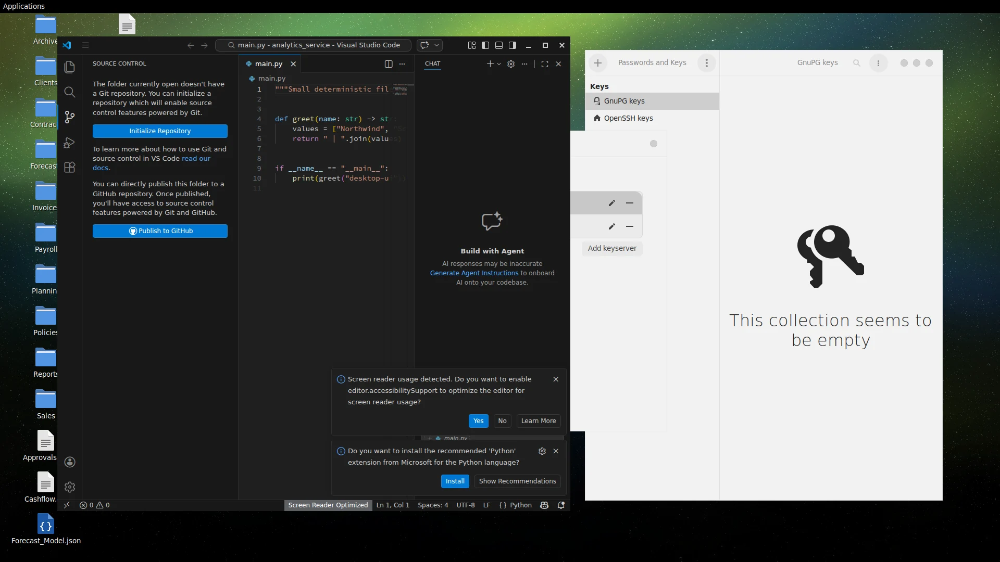
Before · St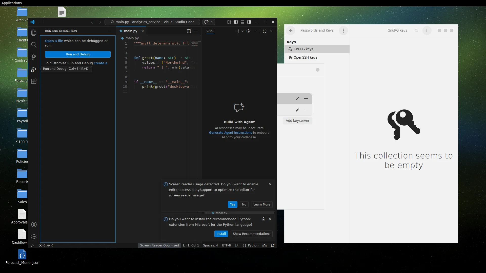
After · St+1Green box: target element. Dot: executed click.
DeskForge-1M
1.21M annotated desktop observations from about 324K composed scenes, spanning 19 applications, seven appearance presets, and seven display resolutions, with 159.7M element instances and 917K recorded click transitions.
Corpus composition
Screens are dense and cluttered: they hold 132 annotated elements on average, 91% show at least two applications, and 98% contain covered elements.
Evaluation splits
Splits are made at the scene level. Four test conditions measure generalization to new scenes and to desktop configurations held out from training.
Comparison with GUI resources
Among these resources, only DeskForge combines dense labels, multi-application scenes, a configurable environment, visibility geometry, and recorded transitions. Resource names link to their papers or project pages.
| Resource | Images | Elements | Dense labels | Multi-app scenes | Configurable environment | Visibility geometry | Recorded transitions |
|---|---|---|---|---|---|---|---|
| UGround | 1.3M | 10M | ✕ | ✕ | ✕ | ✕ | ✕ |
| WinDeskGround | 585† | 1,356‡ | ✕ | ✓ | ✕ | ✓ | ✕ |
| MolmoPoint-GUISyn | 36K | 2M | ✓ | ✕ | ✕ | ✕ | ✕ |
| AgentNet | 421K | 421K | ✕ | ✓ | ✕ | ✕ | ✓ |
| GroundCUA | 55.6K | 3.56M | ✓ | ✕ | ✕ | ✕ | ✕ |
| ScreenParse | 771K | 21M | ✓ | ✕ | ✕ | ✕ | ✕ |
| OS-Atlas | 2.3M | 13M | ✕ | ✓ | ✕ | ✕ | ✕ |
| ScaleCUA | 1.6M | 17.1M | ✓ | ✕ | ✕ | ✕ | ✓ |
| DeskForge (ours) | 1.21M | 159.7M | ✓ | ✓ | ✓ | ✓ | ✓ |
Experiments
We fine-tune four vision-language models, Qwen3.5-4B, Gemma4-E4B, InternVL3.5-8B, and the GUI-specialized UI‑R1‑3B, on 200K grounding examples from DeskForge-1M, and compare each with its base model.
Grounding under held-out desktop conditions
All four models improve in every held-out condition, including unseen applications, themes, and resolutions. In mean accuracy, all four fine-tuned models surpass the strongest public checkpoint we evaluate.
Full table, including ten public checkpoints
Largest gains where desktops are hardest
As more applications share the screen, fine-tuned Qwen loses only a few points, while its base model and UI-Venus-2-9B, the strongest public reference, degrade steadily. The gap to the base grows from 9.7 to 14.3 points, and from 10.9 to 13.7 points as more of the target is covered.
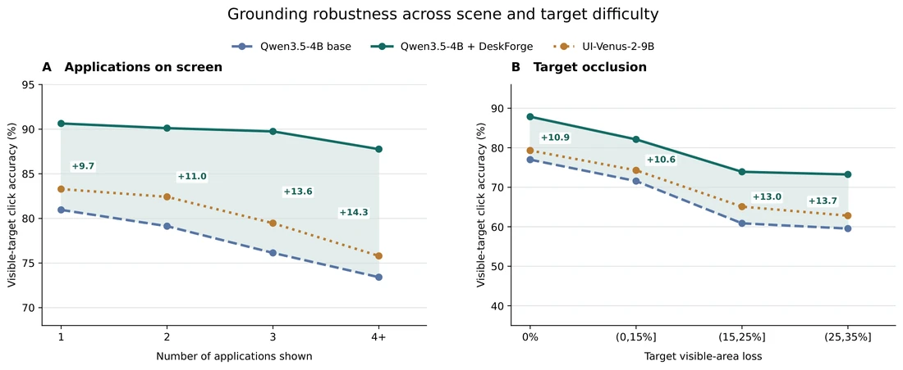
Examples: targets that public models miss
Green box: annotated target. Red markers: public-model clicks. Blue dot: fine-tuned Qwen3.5-4B.
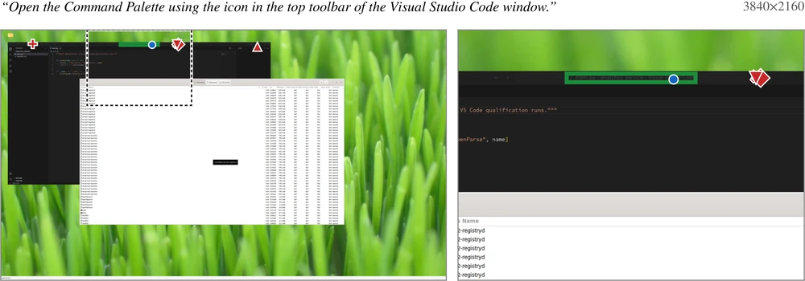
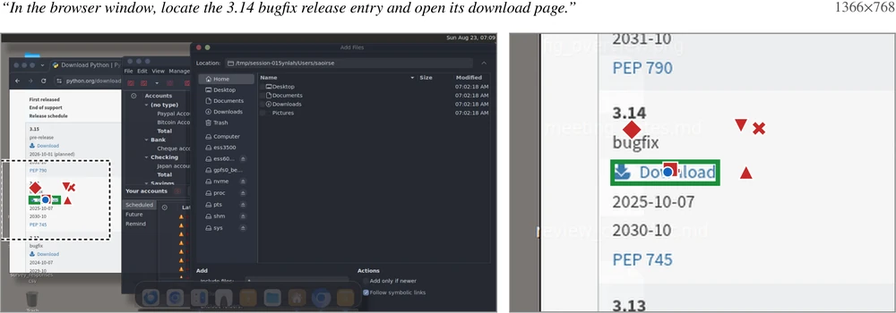
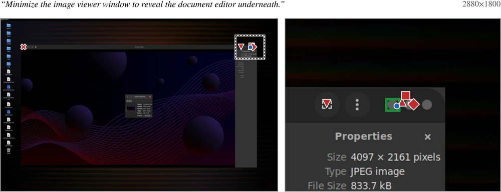
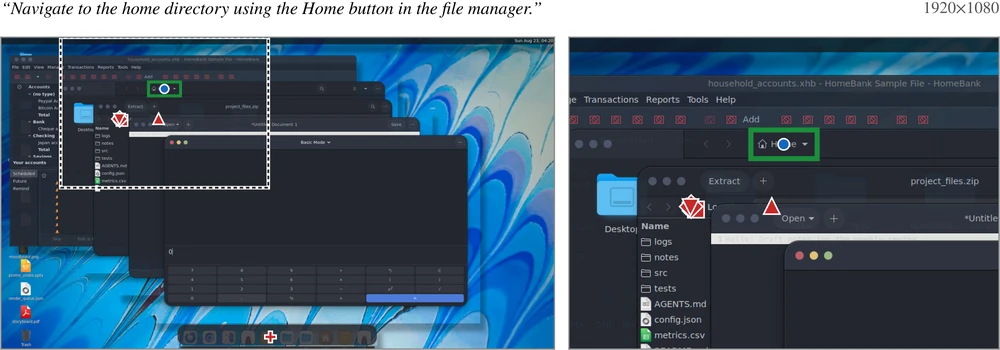
Transfer to external GUI benchmarks
On ScreenSpot-Pro, ScreenSpot-v2, OSWorld-G, UI-Vision, and MMBench-GUI, human-annotated screens from Windows, macOS, Linux, mobile, and the web, all four models improve on all five benchmarks.
Full table
Gemma's mean over the five benchmarks rises by 24.9 points. On ScreenSpot-v2, gains reach mobile and web screens as well, although DeskForge-1M contains no mobile data, and they extend to UI-R1, a model already specialized for GUI interaction.
Long-horizon task completion
A fixed Qwen3.6-27B planner decides what to do; the action model decides where to click. Swapping only the action model, we evaluate a 119-task WebArena-Infinity panel and the 100-task OpenApps longer-horizon set.
Full table
Every fine-tuned action model solves more tasks in both environments, even though training uses single-step grounding examples and these are browser environments unlike our composed desktops. Better grounding alone raises task completion, with no planner training.
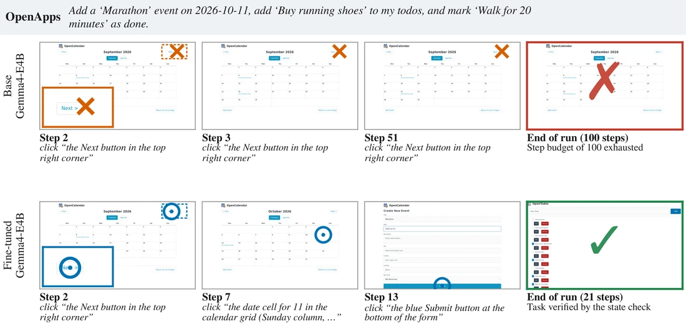
Dense element detection
Dense annotations also teach models to parse the whole screen. An RT-DETRv4-L detector trained on DeskForge-1M transfers to out-of-domain GroundCUA screens and outperforms the OmniParser v2 detector and ScreenParse YOLO11L on all three localization metrics.
| Detector | Group F1 | Center-hit F1 | Mean best IoU |
|---|---|---|---|
| OmniParser v2 detector | 58.55 | 86.24 | 0.591 |
| ScreenParse YOLO11L | 57.59 | 85.90 | 0.585 |
| DeskForge RT-DETRv4-L | 62.17 | 87.01 | 0.611 |
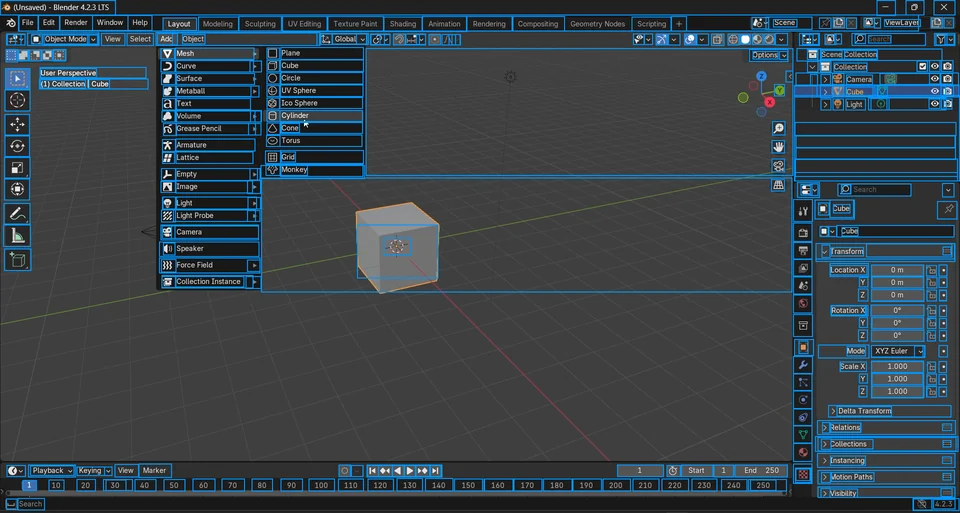
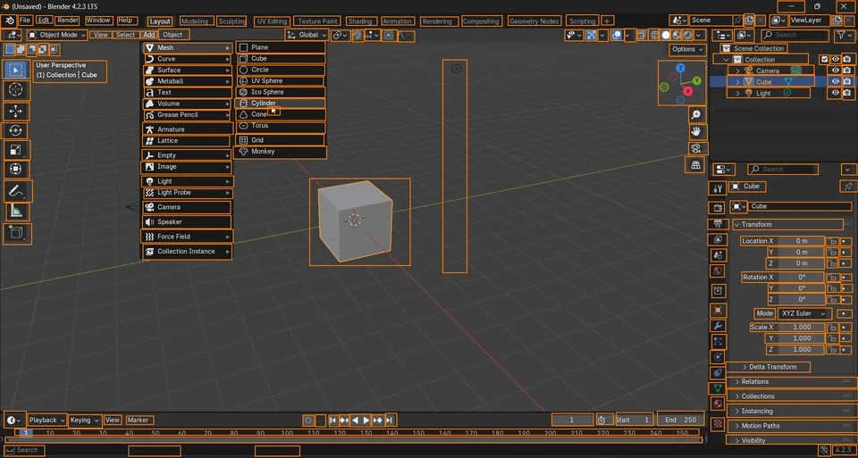
Out-of-distribution professional software from GroundCUA: human annotation (left) and our detector's predictions (right).
BibTeX
@misc{gurbuz2026deskforge,
title={DeskForge: Dense Supervision from Desktop Environments for Computer-Use Agents},
author={A. Said Gurbuz and Ahmed Nassar and Sunghwan Hong and Marc Pollefeys and Peter W. J. Staar},
year={2026},
eprint={2610.02320},
archivePrefix={arXiv},
primaryClass={cs.CV},
url={https://arxiv.org/abs/2610.02320},
}